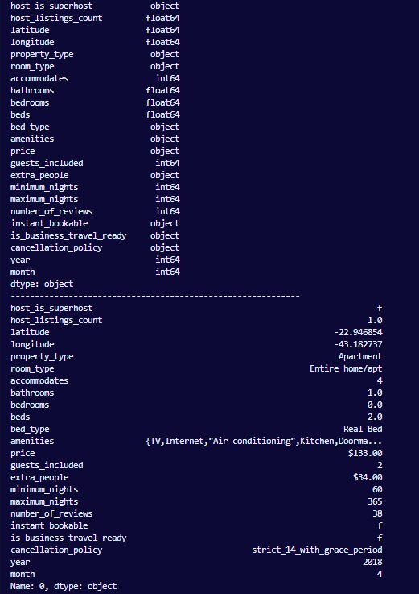
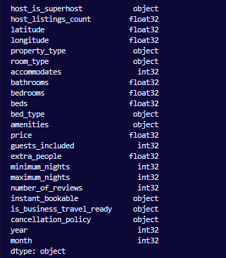

Verifying the data types of each collumn
Following inspection the data types of each column, it is evident that the majority conform to their intended data types. However, the 'price' and 'extra people' columns are incorrectly represented as objects (strings) rather than integers as expected, necessitating a conversion to their appropriate data type.
In order to observe the data types we utilized the following command:
print(base_dataframe.dtypes)
print('-'*60)
print(base_dataframe.iloc[0])

Additionally, all data types of float64 and int64 will be converted to their 32-bit variants to optimize memory usage.
for collumn in main_dataframe :
if main_dataframe[collumn].dtype == 'float64' :
main_dataframe[collumn] = main_dataframe[collumn].astype(np.float32)
elif main_dataframe[collumn].dtype == 'int64' :
main_dataframe[collumn] = main_dataframe[collumn].astype(np.int32)
for collumn in ['price', 'extra_people'] :
main_dataframe[collumn] = main_dataframe[collumn].str.replace(',', '').str.replace('$', '').astype(np.float32, copy=False) #used np.float32 to reduce memory usage
After the conversions the 'price' and 'extra_people' columns were effectively converted to float32 alongside with all the other columns that were int64 or int32, who where converted to their 32 bit variants
